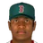

Franchise record book · ABL
Pittsburgh Pirates
Seasons covered: 1872–2002. Only games played for this franchise count.
Read this first: seasons 1871–2001 are real MLB history that shipped with the OOTP file, mapped by OOTP onto this universe's 30 original franchises (club names as they were that season). 2002 is this universe, season to date (top tiers: MLB, ABL, FBL). Player names are as the export stores them; OOTP gives some historical players generated names.
Home runs
Hits
RBI
Runs
Stolen bases
Doubles
Triples
Walks
Total bases
Batting average qualified
| # | Player | Season | Team | Batting average |
|---|---|---|---|---|
| #1 | 1935 |  Pittsburgh Pirates Pittsburgh Pirates | .385 | |
| #2 | 1900 | Pittsburgh Pirates | .381 | |
| #3 | 1927 | Pittsburgh Pirates | .380 | |
| #4 | 1895 | Pittsburgh Pirates | .374 | |
| #5 | 1936 | Pittsburgh Pirates | .373 | |
| #6 | 1928 | Pittsburgh Pirates | .370 | |
| #7 | 2002 (ABL) | Pittsburgh Pirates | .370 | |
| #8 | 1930 | Pittsburgh Pirates | .368 | |
| #9 | 1930 | Pittsburgh Pirates | .366 | |
| #10 | 1905 | Pittsburgh Pirates | .363 |
On-base % qualified
| # | Player | Season | Team | On-base % |
|---|---|---|---|---|
| #1 | 1935 | Pittsburgh Pirates | .488 | |
| #2 | 2002 (ABL) | Pittsburgh Pirates | .466 | |
| #3 | 1992 | Pittsburgh Pirates | .456 | |
| #4 | 1896 | Pittsburgh Pirates | .453 | |
| #5 | 1936 | Pittsburgh Pirates | .450 | |
| #6 | 1951 | Pittsburgh Pirates | .449 | |
| #7 | 1895 | Pittsburgh Pirates | .445 | |
| #8 | 1928 | Pittsburgh Pirates | .444 | |
| #9 | 1936 | Pittsburgh Pirates | .443 | |
| #10 | 1894 | Pittsburgh Pirates | .440 |
Slugging % qualified
| # | Player | Season | Team | Slugging % |
|---|---|---|---|---|
| #1 | 1949 | Pittsburgh Pirates | .658 | |
| #2 | 1973 | Pittsburgh Pirates | .646 | |
| #3 | 1947 | Pittsburgh Pirates | .639 | |
| #4 | 1971 | Pittsburgh Pirates | .628 | |
| #5 | 1951 | Pittsburgh Pirates | .627 | |
| #6 | 1992 | Pittsburgh Pirates | .624 | |
| #7 | Brian Giles • | 1999 | Pittsburgh Pirates | .614 |
| #8 | 1935 | Pittsburgh Pirates | .607 | |
| #9 | 1925 | Pittsburgh Pirates | .598 | |
| #10 | Brian Giles • | 2000 | Pittsburgh Pirates | .594 |
OPS qualified
| # | Player | Season | Team | OPS |
|---|---|---|---|---|
| #1 | 1935 | Pittsburgh Pirates | 1.096 | |
| #2 | 1949 | Pittsburgh Pirates | 1.086 | |
| #3 | 1992 | Pittsburgh Pirates | 1.080 | |
| #4 | 1951 | Pittsburgh Pirates | 1.076 | |
| #5 | 1947 | Pittsburgh Pirates | 1.053 | |
| #6 | 1973 | Pittsburgh Pirates | 1.038 | |
| #7 | Brian Giles • | 1999 | Pittsburgh Pirates | 1.032 |
| #8 | 1971 | Pittsburgh Pirates | 1.026 | |
| #9 | Brian Giles • | 2000 | Pittsburgh Pirates | 1.026 |
| #10 | 1894 | Pittsburgh Pirates | 1.020 |
WAR (OOTP)
Wins
Strikeouts
Saves
Innings
| # | Player | Season | Team | Innings |
|---|---|---|---|---|
| #1 | 1885 | Pittsburgh Alleghenys | 581.0 | |
| #2 | 1886 | Pittsburgh Alleghenys | 555.1 | |
| #3 | 1888 | Pittsburgh Alleghenys | 480.0 | |
| #4 | 1895 | Pittsburgh Pirates | 444.1 | |
| #5 | 1884 | Pittsburgh Alleghenys | 441.0 | |
| #6 | 1887 | Pittsburgh Alleghenys | 440.2 | |
| #7 | 1892 | Pittsburgh Pirates | 440.1 | |
| #8 | 1891 | Pittsburgh Pirates | 437.2 | |
| #9 | 1888 | Pittsburgh Alleghenys | 437.1 | |
| #10 | 1886 | Pittsburgh Alleghenys | 434.2 |
Complete games
Shutouts
ERA qualified
WHIP qualified
K/9 qualified
WAR (OOTP)
Home runs
| # | Player | Years | Home runs |
|---|---|---|---|
| #1 | 1962–82 | 475 | |
| #2 | 1946–55 | 301 | |
| #3 | 1955–72 | 240 | |
| #4 | 1986–02 | 176 | |
| #5 | 1973–91 | 166 | |
| #6 | 1951–66 | 163 | |
| #7 | 1956–72 | 138 | |
| #8 | 1968–85 | 135 | |
| #9 | 1968–85 | 128 | |
| #10 |  Kevin Young • | 1992–02 | 118 |
Hits
| # | Player | Years | Hits |
|---|---|---|---|
| #1 | 1955–72 | 3000 | |
| #2 | 1897–17 | 2967 | |
| #3 | 1926–44 | 2868 | |
| #4 | 1910–29 | 2416 | |
| #5 | 1920–37 | 2416 | |
| #6 | 1927–45 | 2317 | |
| #7 | 1962–82 | 2232 | |
| #8 | 1956–72 | 2016 | |
| #9 | 1932–48 | 1709 | |
| #10 | 1894–15 | 1638 |
RBI
| # | Player | Years | RBI |
|---|---|---|---|
| #1 | 1962–82 | 1540 | |
| #2 | 1897–17 | 1475 | |
| #3 | 1955–72 | 1305 | |
| #4 | 1920–37 | 1273 | |
| #5 | 1926–44 | 1177 | |
| #6 | 1956–72 | 853 | |
| #7 | 1946–55 | 801 | |
| #8 | 1930–40 | 789 | |
| #9 | 1888–07 | 784 | |
| #10 | 1932–48 | 764 |
Runs
| # | Player | Years | Runs |
|---|---|---|---|
| #1 | 1897–17 | 1521 | |
| #2 | 1926–44 | 1493 | |
| #3 | 1955–72 | 1416 | |
| #4 | 1910–29 | 1414 | |
| #5 | 1962–82 | 1195 | |
| #6 | 1920–37 | 1183 | |
| #7 | 1927–45 | 1151 | |
| #8 | 1894–15 | 1015 | |
| #9 | 1898–18 | 1009 | |
| #10 | 1932–48 | 936 |
Stolen bases
| # | Player | Years | Stolen bases |
|---|---|---|---|
| #1 | 1910–29 | 688 | |
| #2 | 1897–17 | 639 | |
| #3 | 1975–86 | 412 | |
| #4 | 1890–07 | 312 | |
| #5 | 1898–18 | 271 | |
| #6 | 1894–15 | 261 | |
| #7 | 1986–02 | 251 | |
| #8 | 1884–96 | 226 | |
| #9 | 1971–82 | 206 | |
| #10 | 1899–10 | 200 |
Doubles
| # | Player | Years | Doubles |
|---|---|---|---|
| #1 | 1926–44 | 558 | |
| #2 | 1897–17 | 551 | |
| #3 | 1955–72 | 440 | |
| #4 | 1962–82 | 423 | |
| #5 | 1910–29 | 375 | |
| #6 | 1920–37 | 371 | |
| #7 | 1973–91 | 296 | |
| #8 | 1956–72 | 294 | |
| #9 | 1932–48 | 291 | |
| #10 | 1968–85 | 276 |
Triples
| # | Player | Years | Triples |
|---|---|---|---|
| #1 | 1897–17 | 232 | |
| #2 | 1926–44 | 187 | |
| #3 | 1955–72 | 166 | |
| #4 | 1920–37 | 164 | |
| #5 | 1894–15 | 156 | |
| #6 | 1910–29 | 148 | |
| #7 | 1898–18 | 139 | |
| #8 | 1888–07 | 134 | |
| #9 | 1932–48 | 116 | |
| #10 | 1927–45 | 114 |
Walks
| # | Player | Years | Walks |
|---|---|---|---|
| #1 | 1962–82 | 937 | |
| #2 | 1910–29 | 918 | |
| #3 | 1926–44 | 909 | |
| #4 | 1897–17 | 877 | |
| #5 | 1946–55 | 795 | |
| #6 | 1932–48 | 778 | |
| #7 | 1930–40 | 679 | |
| #8 | 1894–15 | 630 | |
| #9 | 1934–49 | 625 | |
| #10 | 1955–72 | 621 |
Total bases
| # | Player | Years | Total bases |
|---|---|---|---|
| #1 | 1955–72 | 4492 | |
| #2 | 1897–17 | 4228 | |
| #3 | 1962–82 | 4190 | |
| #4 | 1926–44 | 4127 | |
| #5 | 1920–37 | 3289 | |
| #6 | 1910–29 | 3288 | |
| #7 | 1927–45 | 2895 | |
| #8 | 1956–72 | 2848 | |
| #9 | 1932–48 | 2484 | |
| #10 | 1973–91 | 2397 |
Batting average min 2,000 PA
| # | Player | Years | Batting average |
|---|---|---|---|
| #1 | 1926–44 | .340 | |
| #2 | 1921–38 | .336 | |
| #3 | 1897–17 | .328 | |
| #4 | 1960–74 | .327 | |
| #5 | 1886–01 | .324 | |
| #6 | 1932–48 | .324 | |
| #7 | 1899–10 | .321 | |
| #8 | 1920–37 | .320 | |
| #9 | 1927–45 | .319 | |
| #10 | 1955–72 | .317 |
On-base % min 2,000 PA
| # | Player | Years | On-base % |
|---|---|---|---|
| #1 | 1886–01 | .414 | |
| #2 | 1932–48 | .413 | |
| #3 | 1922–34 | .409 | |
| #4 | 1926–44 | .405 | |
| #5 | 1946–55 | .402 | |
| #6 | 1934–49 | .401 | |
| #7 | 1921–38 | .397 | |
| #8 | 1897–17 | .394 | |
| #9 | 1996–02 | .389 | |
| #10 | 1986–02 | .380 |
Slugging % min 2,000 PA
| # | Player | Years | Slugging % |
|---|---|---|---|
| #1 | 1946–55 | .567 | |
| #2 | 1962–82 | .529 | |
| #3 | 1921–38 | .513 | |
| #4 | 1958–69 | .512 | |
| #5 | 1986–02 | .503 | |
| #6 | 1973–91 | .494 | |
| #7 | 1922–34 | .491 | |
| #8 | 1926–44 | .490 | |
| #9 | 1947–56 | .484 | |
| #10 | 1986–01 | .481 |
OPS min 2,000 PA
| # | Player | Years | OPS |
|---|---|---|---|
| #1 | 1946–55 | .968 | |
| #2 | 1921–38 | .911 | |
| #3 | 1922–34 | .899 | |
| #4 | 1926–44 | .894 | |
| #5 | 1962–82 | .889 | |
| #6 | 1932–48 | .884 | |
| #7 | 1986–02 | .883 | |
| #8 | 1886–01 | .879 | |
| #9 | 1897–17 | .862 | |
| #10 | 1973–91 | .848 |
WAR (OOTP)
| # | Player | Years | WAR (OOTP) |
|---|---|---|---|
| #1 | 1897–17 | 106.8 | |
| #2 | 1962–82 | 78.2 | |
| #3 | 1955–72 | 76.6 | |
| #4 | 1926–44 | 73.0 | |
| #5 | 1910–29 | 58.7 | |
| #6 | 1932–48 | 56.7 | |
| #7 | 1946–55 | 51.2 | |
| #8 | 1894–15 | 44.1 | |
| #9 | 1973–91 | 38.7 | |
| #10 | 1986–02 | 38.0 |
Wins
| # | Player | Years | Wins |
|---|---|---|---|
| #1 | 1912–26 | 202 | |
| #2 | 1906–26 | 194 | |
| #3 | 1898–10 | 194 | |
| #4 | 1951–66 | 191 | |
| #5 | 1899–11 | 168 | |
| #6 | 1950–67 | 162 | |
| #7 | 1932–49 | 143 | |
| #8 | 1924–33 | 143 | |
| #9 | 1884–90 | 137 | |
| #10 | 1875–92 | 137 |
Strikeouts
| # | Player | Years | Strikeouts |
|---|---|---|---|
| #1 | 1951–66 | 1682 | |
| #2 | 1962–74 | 1652 | |
| #3 | 1912–26 | 1191 | |
| #4 | 1975–93 | 1159 | |
| #5 | 1950–67 | 1092 | |
| #6 | 1906–26 | 1036 | |
| #7 | 1884–90 | 915 | |
| #8 | Steve Blass | 1964–74 | 896 |
| #9 | 1968–79 | 869 | |
| #10 | 1899–11 | 861 |
Saves
| # | Player | Years | Saves |
|---|---|---|---|
| #1 | 1953–69 | 186 | |
| #2 | 1974–89 | 158 | |
| #3 | 1962–77 | 133 | |
| #4 | Mike Williams • | 1992–02 | 69 |
| #5 | 1989–00 | 61 | |
| #6 | 1961–70 | 59 | |
| #7 | 1986–93 | 56 | |
| #8 | 1982–95 | 50 | |
| #9 | 1996–01 | 49 | |
| #10 | 1978–92 | 43 |
Innings
| # | Player | Years | Innings |
|---|---|---|---|
| #1 | 1951–66 | 3480.1 | |
| #2 | 1912–26 | 3199.0 | |
| #3 | 1906–26 | 2991.1 | |
| #4 | 1950–67 | 2672.0 | |
| #5 | 1898–10 | 2660.2 | |
| #6 | 1875–92 | 2301.2 | |
| #7 | 1899–11 | 2286.0 | |
| #8 | 1884–90 | 2248.1 | |
| #9 | 1932–49 | 2108.2 | |
| #10 | 1924–33 | 1954.2 |
Complete games
| # | Player | Years | Complete games |
|---|---|---|---|
| #1 | 1912–26 | 263 | |
| #2 | 1884–90 | 250 | |
| #3 | 1875–92 | 248 | |
| #4 | 1898–10 | 241 | |
| #5 | 1899–11 | 209 | |
| #6 | 1906–26 | 206 | |
| #7 | 1891–00 | 163 | |
| #8 | 1951–66 | 161 | |
| #9 | 1894–11 | 148 | |
| #10 | 1932–49 | 137 |
Shutouts
| # | Player | Years | Shutouts |
|---|---|---|---|
| #1 | 1906–26 | 44 | |
| #2 | 1898–10 | 39 | |
| #3 | 1951–66 | 35 | |
| #4 | 1912–26 | 33 | |
| #5 | 1905–20 | 29 | |
| #6 | 1950–67 | 28 | |
| #7 | 1884–90 | 26 | |
| #8 | 1899–11 | 25 | |
| #9 | 1898–10 | 23 | |
| #10 | 1932–49 | 20 |
ERA min 500 IP
| # | Player | Years | ERA |
|---|---|---|---|
| #1 | 1898–10 | 2.08 | |
| #2 | 1907–10 | 2.29 | |
| #3 | 1905–20 | 2.38 | |
| #4 | 1898–10 | 2.47 | |
| #5 | 1899–11 | 2.50 | |
| #6 | 1909–18 | 2.60 | |
| #7 | 1913–24 | 2.61 | |
| #8 | 1904–13 | 2.63 | |
| #9 | 1974–89 | 2.68 | |
| #10 | 1911–20 | 2.71 |
WHIP min 500 IP
| # | Player | Years | WHIP |
|---|---|---|---|
| #1 | 1898–10 | 1.08 | |
| #2 | 1907–10 | 1.09 | |
| #3 | 1899–11 | 1.09 | |
| #4 | 1906–26 | 1.09 | |
| #5 | 1913–23 | 1.11 | |
| #6 | 1898–10 | 1.14 | |
| #7 | 1884–90 | 1.15 | |
| #8 | 1986–98 | 1.15 | |
| #9 | 1909–18 | 1.15 | |
| #10 | 1965–78 | 1.17 |
K/9 min 500 IP
| # | Player | Years | K/9 |
|---|---|---|---|
| #1 | 1962–74 | 8.0 | |
| #2 | Denny Neagle • | 1991–02 | 7.1 |
| #3 | 1992–99 | 7.0 | |
| #4 | 1970–92 | 6.7 | |
| #5 | 1995–02 | 6.7 | |
| #6 | 1994–02 | 6.7 | |
| #7 | 1996–02 | 6.4 | |
| #8 | 1965–74 | 6.2 | |
| #9 | 1978–90 | 6.2 | |
| #10 | 1978–92 | 6.2 |
WAR (OOTP)
| # | Player | Years | WAR (OOTP) |
|---|---|---|---|
| #1 | 1951–66 | 69.0 | |
| #2 | 1906–26 | 62.8 | |
| #3 | 1912–26 | 50.6 | |
| #4 | 1899–11 | 48.8 | |
| #5 | 1962–74 | 41.3 | |
| #6 | 1898–10 | 40.7 | |
| #7 | 1884–90 | 39.6 | |
| #8 | 1950–67 | 36.7 | |
| #9 | 1894–11 | 31.9 | |
| #10 | 1975–93 | 31.4 |
The franchise's best real-history seasons by winning percentage.
| Season | Club | W | L | PCT | Postseason |
|---|---|---|---|---|---|
| 1902 | Pittsburgh Pirates | 103 | 36 | .741 | Playoffs |
| 1909 | Pittsburgh Pirates | 110 | 42 | .724 | Champion |
| 1903 | Pittsburgh Pirates | 91 | 49 | .650 | Playoffs |
| 1901 | Pittsburgh Pirates | 90 | 49 | .647 | Playoffs |
| 1908 | Pittsburgh Pirates | 98 | 56 | .636 | |
| 1893 | Pittsburgh Pirates | 81 | 48 | .628 | |
| 1905 | Pittsburgh Pirates | 96 | 57 | .627 | |
| 1925 | Pittsburgh Pirates | 95 | 58 | .621 | Champion |
| 1972 | Pittsburgh Pirates | 96 | 59 | .619 | Playoffs |
| 1960 | Pittsburgh Pirates | 95 | 59 | .617 | Champion |